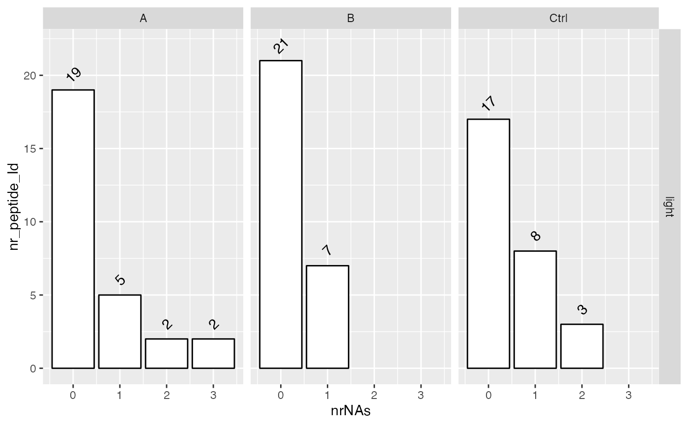
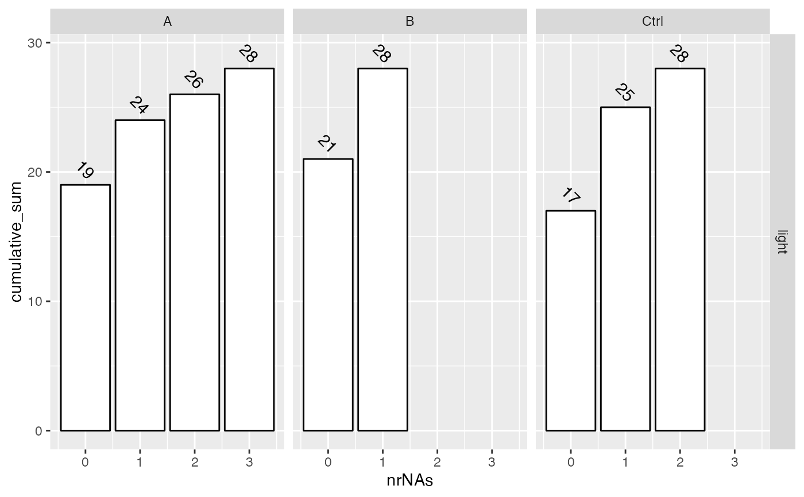
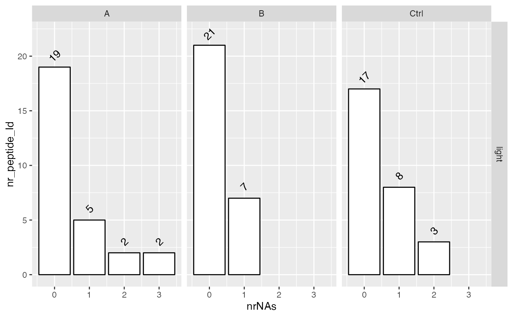
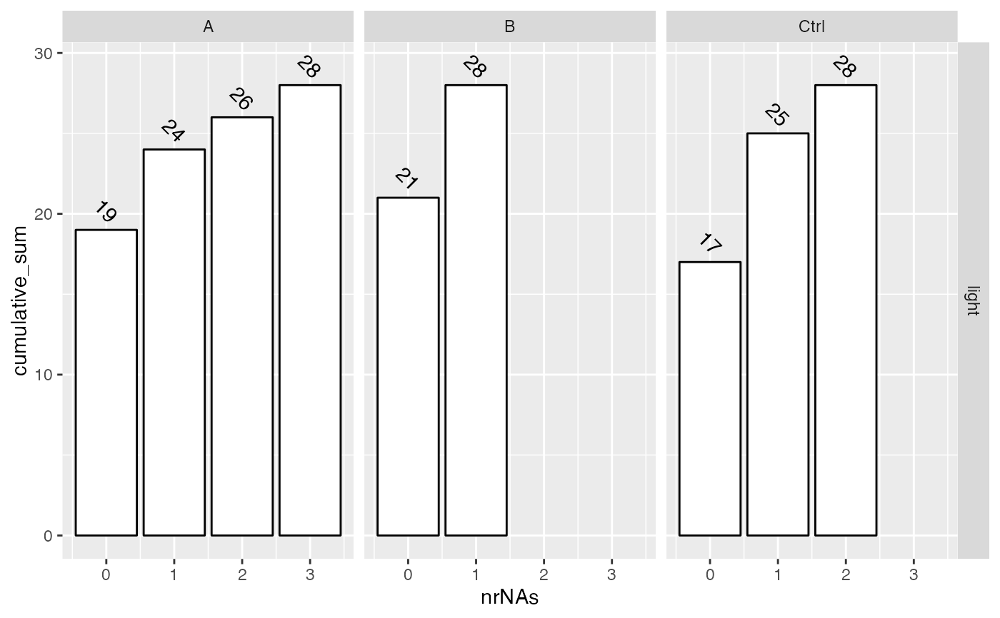

Summarize LFQData
Summarize LFQData
See also
Other LFQData:
LFQData,
LFQDataAggregator,
LFQDataPlotter,
LFQDataStats,
LFQDataToSummarizedExperiment(),
LFQDataWriter,
ProteinAnnotation
Public fields
lfqLFQData
Methods
Method hierarchy_counts_sample()
number of elements at each level in every sample
Usage
LFQDataSummariser$hierarchy_counts_sample(value = c("wide", "long"))Method plot_hierarchy_counts_sample()
barplot showing number of elements at each level in every sample
Method interaction_missing_stats()
missing per condition and protein
Method upset_interaction_missing_stats()
upset plot with missing information per protein and condition
Method plot_missingness_per_group()
barplot with number of features with 1,2, etc missing in condition
Method plot_missingness_per_group_cumsum()
barplot with cumulative sum of features with 1,2, etc missing in condition
Method percentage_abundance()
Does roll up to highest hierarchy and Computes the percent abundance of proteins overall and within each group
Examples
istar <- prolfqua_data('data_ionstar')
istar$config <- old2new(istar$config)
data <- istar$data |> dplyr::filter(protein_Id %in% sample(protein_Id, 100))
lfqdata <- LFQData$new(data, istar$config)
sum <- lfqdata$get_Summariser()
sum
#> <LFQDataSummariser>
#> Public:
#> clone: function (deep = FALSE)
#> hierarchy_counts: function ()
#> hierarchy_counts_sample: function (value = c("wide", "long"))
#> initialize: function (lfqdata)
#> interaction_missing_stats: function ()
#> lfq: LFQData, R6
#> missingness_per_group: function ()
#> missingness_per_group_cumsum: function ()
#> percentage_abundance: function (N = 1000)
#> plot_hierarchy_counts_sample: function ()
#> plot_missingness_per_group: function ()
#> plot_missingness_per_group_cumsum: function ()
#> upset_interaction_missing_stats: function (tr = 2)
sum$hierarchy_counts()
#> # A tibble: 1 × 3
#> isotope protein_Id peptide_Id
#> <chr> <int> <int>
#> 1 light 64 689
sum$hierarchy_counts_sample("wide")
#> # A tibble: 20 × 4
#> # Groups: isotope [1]
#> isotope sampleName protein_Id peptide_Id
#> <chr> <chr> <int> <int>
#> 1 light a~10 62 586
#> 2 light a~11 60 571
#> 3 light a~20 61 563
#> 4 light a~21 62 556
#> 5 light b~02 60 593
#> 6 light b~09 61 577
#> 7 light b~12 62 593
#> 8 light b~19 62 553
#> 9 light c~03 61 585
#> 10 light c~08 63 577
#> 11 light c~13 61 566
#> 12 light c~18 62 560
#> 13 light d~04 61 590
#> 14 light d~07 63 581
#> 15 light d~14 62 576
#> 16 light d~17 59 567
#> 17 light e~05 60 584
#> 18 light e~06 60 580
#> 19 light e~15 63 569
#> 20 light e~16 60 564
sum$hierarchy_counts_sample("long")
#> # A tibble: 40 × 4
#> # Groups: isotope [1]
#> isotope sampleName key nr
#> <chr> <chr> <chr> <int>
#> 1 light a~10 protein_Id 62
#> 2 light a~11 protein_Id 60
#> 3 light a~20 protein_Id 61
#> 4 light a~21 protein_Id 62
#> 5 light b~02 protein_Id 60
#> 6 light b~09 protein_Id 61
#> 7 light b~12 protein_Id 62
#> 8 light b~19 protein_Id 62
#> 9 light c~03 protein_Id 61
#> 10 light c~08 protein_Id 63
#> # ℹ 30 more rows
sum$plot_hierarchy_counts_sample()
 tmp <- sum$interaction_missing_stats()
#> completing cases
head(tmp)
#> $data
#> # A tibble: 3,560 × 9
#> dilution. protein_Id peptide_Id isotope nrReplicates nrNAs meanAbundance
#> <chr> <chr> <chr> <chr> <int> <int> <dbl>
#> 1 a CON__P34955~32… AALTIDEK light 4 0 51749500
#> 2 a CON__P34955~32… DFHVDEQTT… light 4 0 224912500
#> 3 a CON__P34955~32… GKWEKPFEMK light 4 0 114729750
#> 4 a CON__P34955~32… HTTERDFHV… light 4 0 154849750
#> 5 a CON__P34955~32… KYASSANLH… light 4 0 92415250
#> 6 a CON__P34955~32… LGMFDLHYC… light 4 3 9756800
#> 7 a CON__P34955~32… LQQLEDKLN… light 4 0 405185000
#> 8 a CON__P34955~32… LSISETYDLK light 4 0 176582500
#> 9 a CON__P34955~32… LVDTFLEDVK light 4 0 415310000
#> 10 a CON__P34955~32… NLYHSEAFS… light 4 0 78999750
#> # ℹ 3,550 more rows
#> # ℹ 2 more variables: medianAbundance <dbl>, nrMeasured <int>
#>
#> $summaries
#> [1] "nrReplicates" "nrNAs" "nrMeasured" "meanAbundance"
#> [5] "medianAbundance"
#>
sum$missingness_per_group()
#> completing cases
#> # A tibble: 5 × 8
#> # Groups: isotope, dilution. [5]
#> isotope dilution. nrReplicates `0` `1` `2` `3` `4`
#> <chr> <chr> <int> <int> <int> <int> <int> <int>
#> 1 light a 4 506 59 54 55 38
#> 2 light b 4 508 80 42 50 32
#> 3 light c 4 500 77 42 60 33
#> 4 light d 4 508 79 42 47 36
#> 5 light e 4 501 73 56 49 33
sum$missingness_per_group_cumsum()
#> completing cases
#> isotope ~ dilution.
#> # A tibble: 5 × 8
#> # Groups: isotope, dilution. [5]
#> isotope dilution. nrReplicates `0` `1` `2` `3` `4`
#> <chr> <chr> <int> <int> <int> <int> <int> <int>
#> 1 light a 4 506 565 619 674 712
#> 2 light b 4 508 588 630 680 712
#> 3 light c 4 500 577 619 679 712
#> 4 light d 4 508 587 629 676 712
#> 5 light e 4 501 574 630 679 712
sum$plot_missingness_per_group()
#> completing cases
tmp <- sum$interaction_missing_stats()
#> completing cases
head(tmp)
#> $data
#> # A tibble: 3,560 × 9
#> dilution. protein_Id peptide_Id isotope nrReplicates nrNAs meanAbundance
#> <chr> <chr> <chr> <chr> <int> <int> <dbl>
#> 1 a CON__P34955~32… AALTIDEK light 4 0 51749500
#> 2 a CON__P34955~32… DFHVDEQTT… light 4 0 224912500
#> 3 a CON__P34955~32… GKWEKPFEMK light 4 0 114729750
#> 4 a CON__P34955~32… HTTERDFHV… light 4 0 154849750
#> 5 a CON__P34955~32… KYASSANLH… light 4 0 92415250
#> 6 a CON__P34955~32… LGMFDLHYC… light 4 3 9756800
#> 7 a CON__P34955~32… LQQLEDKLN… light 4 0 405185000
#> 8 a CON__P34955~32… LSISETYDLK light 4 0 176582500
#> 9 a CON__P34955~32… LVDTFLEDVK light 4 0 415310000
#> 10 a CON__P34955~32… NLYHSEAFS… light 4 0 78999750
#> # ℹ 3,550 more rows
#> # ℹ 2 more variables: medianAbundance <dbl>, nrMeasured <int>
#>
#> $summaries
#> [1] "nrReplicates" "nrNAs" "nrMeasured" "meanAbundance"
#> [5] "medianAbundance"
#>
sum$missingness_per_group()
#> completing cases
#> # A tibble: 5 × 8
#> # Groups: isotope, dilution. [5]
#> isotope dilution. nrReplicates `0` `1` `2` `3` `4`
#> <chr> <chr> <int> <int> <int> <int> <int> <int>
#> 1 light a 4 506 59 54 55 38
#> 2 light b 4 508 80 42 50 32
#> 3 light c 4 500 77 42 60 33
#> 4 light d 4 508 79 42 47 36
#> 5 light e 4 501 73 56 49 33
sum$missingness_per_group_cumsum()
#> completing cases
#> isotope ~ dilution.
#> # A tibble: 5 × 8
#> # Groups: isotope, dilution. [5]
#> isotope dilution. nrReplicates `0` `1` `2` `3` `4`
#> <chr> <chr> <int> <int> <int> <int> <int> <int>
#> 1 light a 4 506 565 619 674 712
#> 2 light b 4 508 588 630 680 712
#> 3 light c 4 500 577 619 679 712
#> 4 light d 4 508 587 629 676 712
#> 5 light e 4 501 574 630 679 712
sum$plot_missingness_per_group()
#> completing cases
 sum$plot_missingness_per_group_cumsum()
#> completing cases
#> isotope ~ dilution.

sum$upset_interaction_missing_stats()
#> completing cases

sum$percentage_abundance()
#> Joining with `by = join_by(protein_Id, peptide_Id)`
#> Columns added : srm_meanInt srm_meanIntRank
#> completing cases
#> completing cases
#> # A tibble: 384 × 12
#> # Groups: dilution. [6]
#> dilution. protein_Id isotope nrReplicates nrNAs meanAbundance medianAbundance
#> <chr> <chr> <chr> <int> <int> <dbl> <dbl>
#> 1 a sp|P07711… light 4 0 1188650 0
#> 2 a sp|Q9UBT7… light 4 0 2240850 2047000
#> 3 a sp|Q8WW01… light 4 0 2618825 2590700
#> 4 a sp|Q96T58… light 4 0 3302050 2586250
#> 5 a sp|P0AGJ9… light 4 0 6031775 6672550
#> 6 a sp|Q8WX92… light 4 0 6679325 8426150
#> 7 a sp|P10909… light 4 0 7981750 7959950
#> 8 a sp|P02924… light 4 0 10228850 8685150
#> 9 a sp|P0ACW6… light 4 0 13717750 14291500
#> 10 a sp|Q14146… light 4 0 13970900 13335750
#> # ℹ 374 more rows
#> # ℹ 5 more variables: nrMeasured <int>, id <int>, abundance_percent <dbl>,
#> # abundance_percent_cumulative <dbl>, percent_prot <dbl>
sum$plot_missingness_per_group_cumsum()
#> completing cases
#> isotope ~ dilution.

sum$upset_interaction_missing_stats()
#> completing cases

sum$percentage_abundance()
#> Joining with `by = join_by(protein_Id, peptide_Id)`
#> Columns added : srm_meanInt srm_meanIntRank
#> completing cases
#> completing cases
#> # A tibble: 384 × 12
#> # Groups: dilution. [6]
#> dilution. protein_Id isotope nrReplicates nrNAs meanAbundance medianAbundance
#> <chr> <chr> <chr> <int> <int> <dbl> <dbl>
#> 1 a sp|P07711… light 4 0 1188650 0
#> 2 a sp|Q9UBT7… light 4 0 2240850 2047000
#> 3 a sp|Q8WW01… light 4 0 2618825 2590700
#> 4 a sp|Q96T58… light 4 0 3302050 2586250
#> 5 a sp|P0AGJ9… light 4 0 6031775 6672550
#> 6 a sp|Q8WX92… light 4 0 6679325 8426150
#> 7 a sp|P10909… light 4 0 7981750 7959950
#> 8 a sp|P02924… light 4 0 10228850 8685150
#> 9 a sp|P0ACW6… light 4 0 13717750 14291500
#> 10 a sp|Q14146… light 4 0 13970900 13335750
#> # ℹ 374 more rows
#> # ℹ 5 more variables: nrMeasured <int>, id <int>, abundance_percent <dbl>,
#> # abundance_percent_cumulative <dbl>, percent_prot <dbl>